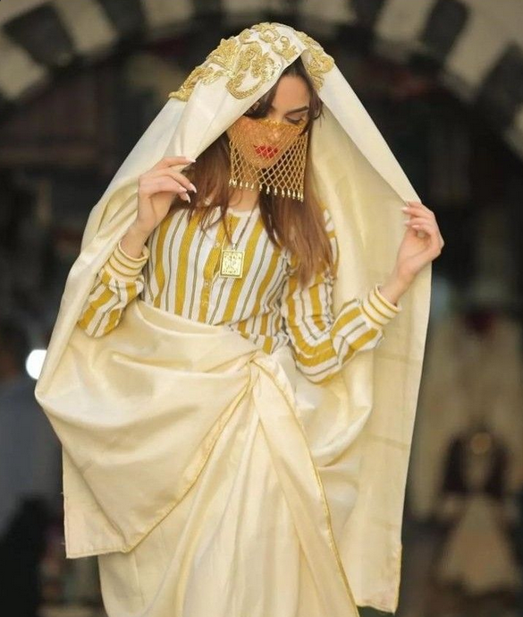
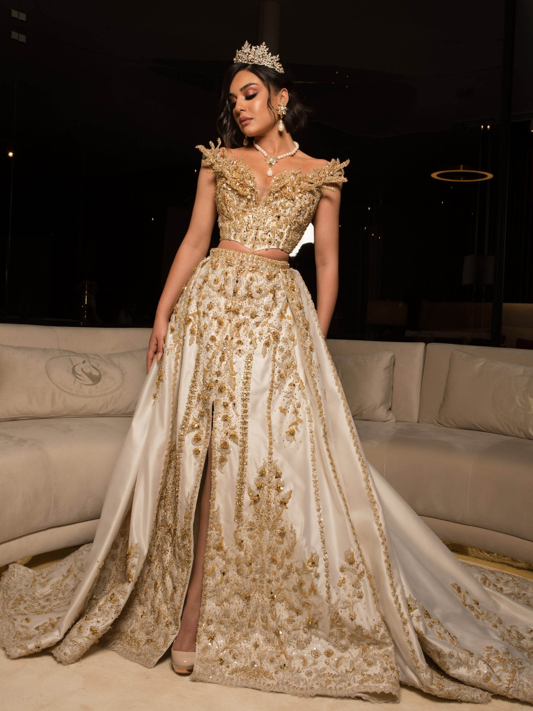

Habits Traditionnels Tunisiens
Un patrimoine riche, élégant et chargé d’histoire.

Le Safseri
Voile traditionnel porté par les femmes tunisiennes. Élégance, pudeur et héritage.

Fouta & Blouza
Habit de fête, brodé et coloré, porté dans les mariages et occasions spéciales.

La Chechia
Coiffe emblématique de la Tunisie, façonnée à la main dans les ateliers traditionnels.